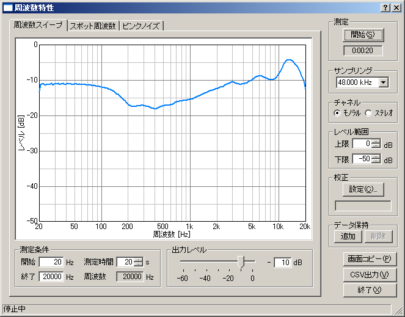

周波数特性とは、周波数に対するレベルの変化をグラフ化したもので、ここでは、周波数スイープ、スポット周波数、ピンクノイズの３種類の方法で測定を行うことができます。 周波数スイープは、周波数を連続的に変えながら測定するもので、連続した滑らかな曲線のグラフが描けます。スポット周波数は周波数を段階的に変えながら測定するもので、測定中の周波数のみを通過させるフィルタを使用しているため、ノイズの影響を受けにくく、最も正確な値が得られる利点があります。ピンクノイズは、ピンクノイズをFFT分析することで周波数特性を求める方法で、同時に全周波数帯域のグラフが表示できる特徴があります。